Redefining what shipped looks like. Fighting for clarity,
obsessing over craft, and building products people
actually love to use — on screen and beyond it.
A mobile-first payment app that lets adult rec-league organizers collect player fees in one tap, replacing the spreadsheet-and-Venmo chase.
Client
Pay the Pyper founders, via Chop Dawg Studios
Platform
Mobile, React Native, Stripe
Role
Product design and UX copy
Context
Adult recreational sports: hockey, softball and basketball leagues, plus pickup games.
Someone always has to chase people for cash, across spreadsheets and Venmo.
Two roles. Organizers (called Captains in the app) run the league and want control and visibility. Players want to pay fast, and friction is the enemy. Overall audience: 18 to 65.
The MVP covered 15 features: social login (Google, Apple), onboarding with role selection, a subscription paywall with free trial, group creation and invites (email, phone, link), one-time and recurring events, Stripe payments (card, bank), manual payment marking (cash, Venmo), expense tracking, an organizer dashboard, a multi-group player home, block and report, settings with account deletion, push notifications, transactional emails, and light and dark mode.
The challenge
Regulation & platform
Two payment rails in one app: the subscription runs through in-app purchase, while league fees for real-world play run through Stripe. Account deletion and block/report are App Store requirements.
Business
Revenue comes from a subscription paywall with a free trial.
The subscription sits with the organizer, so organizers have to feel the value before the trial ends. Players never pay to pay.
User experience
Money between teammates is awkward. The promise is to take that conversation off the organizer’s plate, and the copy has to feel like a locker room, not a bank.
Research
Documentation and product analysis, anchored by a client brand survey rated on 7-point scales.
1/7PersonableCorporate ↔ personable
1/7Accessible to allExclusive ↔ accessible
3/7Leans funSerious ↔ fun
5/7Bold, colorfulMinimal ↔ bold and colorful
7/7Cutting-edgeGroundbreaking
6/7Feels affordablePremium ↔ economical
The survey set the tone: personable, accessible, bold. Benchmarks covered how TeamSnap and LeagueApps handle league fees, and how Splitwise and Venmo group requests handle the ask itself, the exact moment Pay the Pyper had to make less awkward.
System mapping
01Group
The organizer creates a group.
02Invite
Players join by email, phone or a shareable link.
03Event
One-time or recurring, each with a fee.
04Collect
Players pay through Stripe by card or bank, or the organizer marks cash and Venmo as paid.
05Track
The dashboard shows who paid, who owes, and expenses like venue and ref fees.
UX strategy
Easy. Fun. Fast.
The founders’ three words, applied to every screen.
Locker room, not a bank.
The voice of a teammate handling the money, never a fintech disclaimer.
One tap for players.
From notification to paid in the fewest possible steps.
Visibility for organizers.
Who paid, who owes, and how much, at a glance.
Every payment counts.
Stripe and manual payments land in one ledger.
Information architecture
Role-based structure, derived from the MVP feature list.
Organizer
Dashboard
Groups: roster, invites
Events: one-time, recurring
Payments and expenses
Settings
Player
Home: all groups
Event detail and pay
Settings
Shared
Onboarding and role selection
Paywall
Notifications
Block and report
Account deletion
Core flows
Six flows carry the MVP, from first login to account deletion.
Onboarding and role selection
Social login (Google or Apple)
“How will you use Pay the Pyper?”
Captain (organizer) or Player
Organizer trial paywall
Create group and invite players
Name the group
Invite by email, phone or link
Roster fills as players join
Create an event
Pick one-time or recurring
Set date and fee
Publish
Players notified
Player pays
Push: “Hey [Name] — $20 for Friday hockey. Tap to pay.”
Event detail
Pay Now
Stripe card or bank
Success
Error branchCard declined. Try a different card or pay with your bank account.
Manual payments and expenses
Organizer taps Confirm manual payment for cash or Venmo
Ledger updates
Log venue or ref fees
Dashboard balance
Safety and account
Block or report a user
Confirmation
Account deletionSettings → Delete account → confirmation with “Go Back” as the safe option.
Design system
Light and dark mode were in MVP scope.
Brand direction from the survey: bold and colorful, affordable-feeling, cutting-edge.
Copy rules work as system rules: verb-first CTAs under three words; sentence-case labels with no colons; example placeholders (“e.g. Tuesday Hoops”); “$10”, not “$10.00”; confirm dialogs use “Go Back” instead of “Cancel.”
Payment status chip: Paid, Pending and Removed, each with its own label so status never depends on color alone.
Dashboard stat card: one number at full size (Collected this month, Pending payment) with a single action attached, like Send reminder.
Group row: sport icon, player count and fee per event, with a pending badge only when something needs attention.
Event invite card: Accept and Decline side by side, with an RSVP progress bar (20/22 accepted).
Reminder banner: an amber, first-person nudge from the organizer (“please pay before game day”).
Button pair: filled primary for the money action, outlined secondary for the fallback (Pay the Pyper / Confirm manual payment).
High-fidelity screens
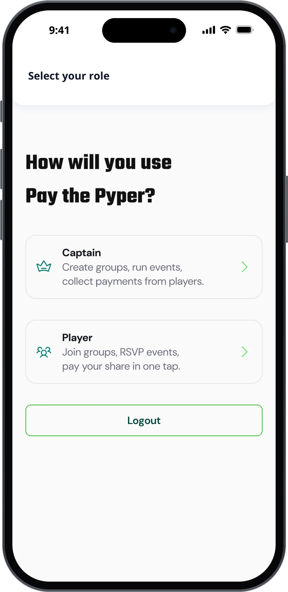
Role selection
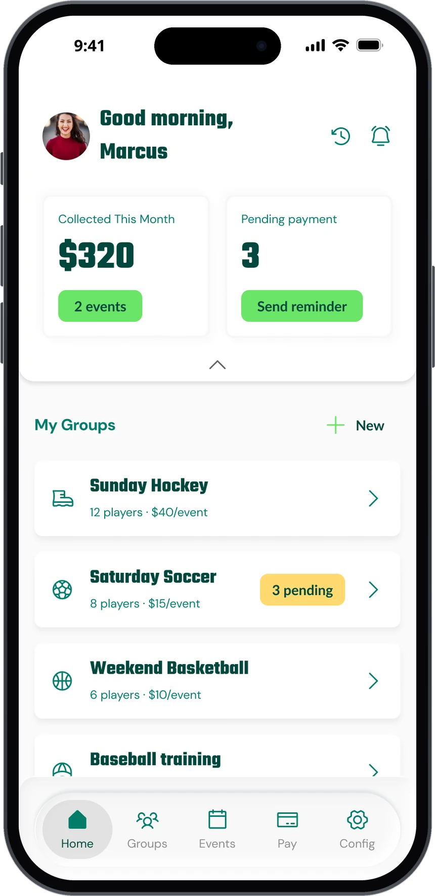
Organizer dashboard
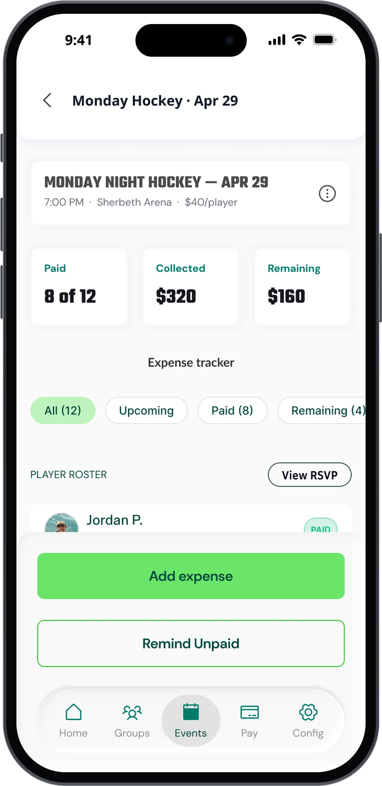
Event detail with payment status
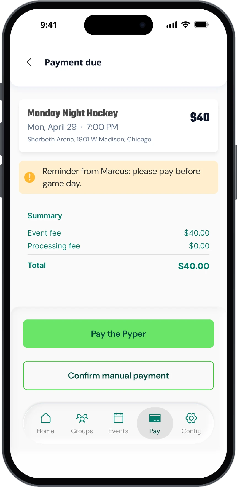
Player pay sheet
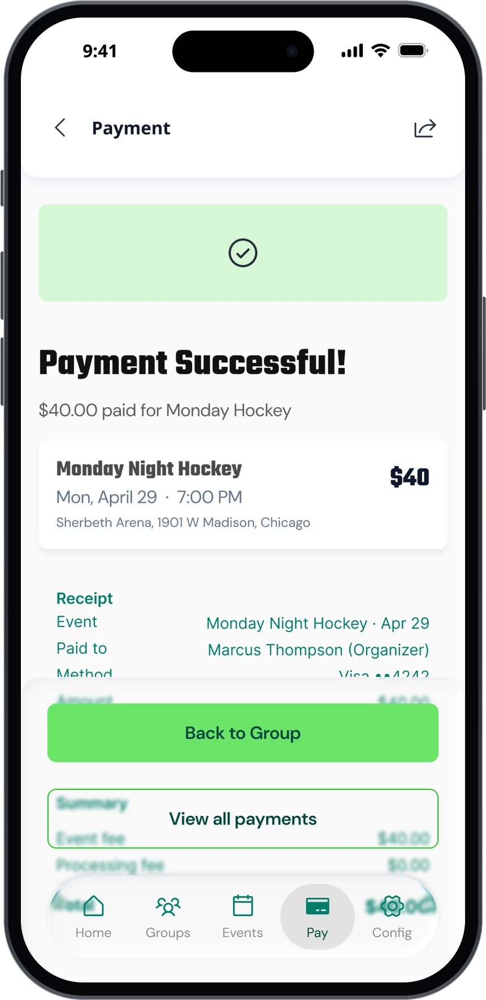
Payment success
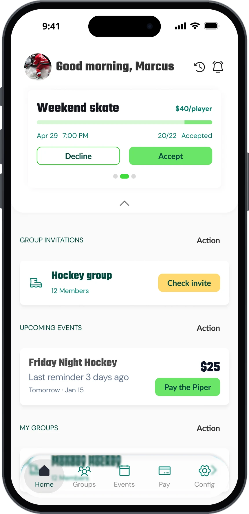
Player multi-group home
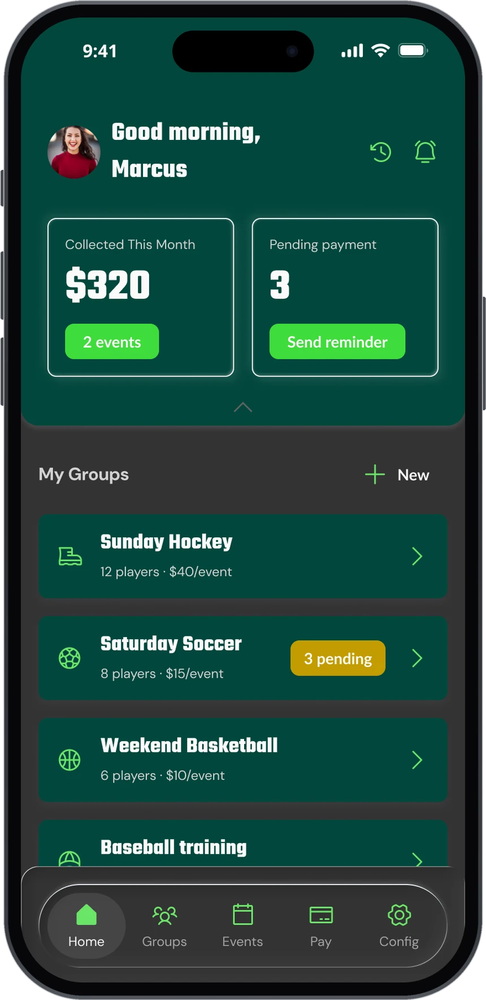
Dark mode: organizer home
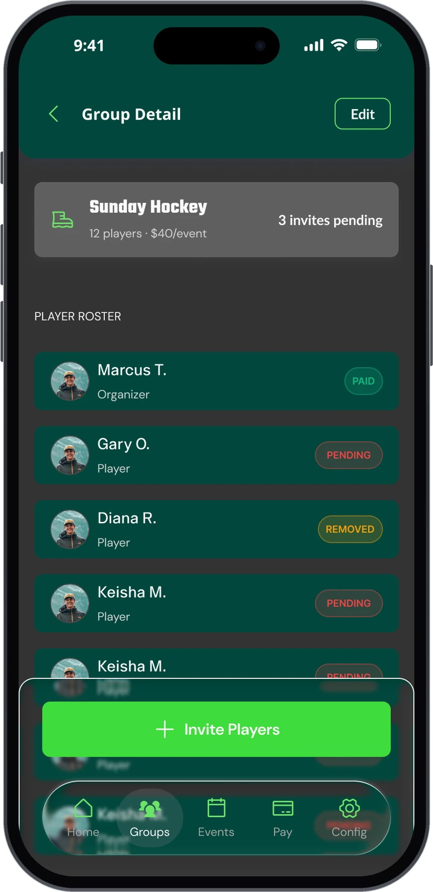
Dark mode: group roster
Key interactions
Reminder to paid.
The player opens the reminder, sees the fee summary with no processing fee, taps Pay the Pyper, and lands on a receipt. One screen, one decision.
Send reminder, not a message.
The organizer nudges everyone who owes from the dashboard card. The app does the asking, so the organizer doesn’t have to.
Accept from home.
Event invites sit at the top of the player home with Accept and Decline, so RSVPs happen without opening the event.
Same app, after dark.
Every screen ships in light and dark mode, with status chips tuned to stay legible on both.
Learnings
Pick one word per role, early. The brief said organizer, the UI says Captain. Either works, but the product, its docs and its copy need to agree before the first screen ships.
Manual payments are a feature, not a failure. Cash and Venmo will always happen. If they don’t land in the same ledger as Stripe, organizers keep the spreadsheet, and the app loses its reason to exist.
Copy rules are system rules. Writing down verb-first CTAs, “Go Back” instead of “Cancel” and whole-dollar amounts once saved the same debate on every screen after it.
What I’d measure
North star
Collection rate: share of event fees paid in-app by event day
Supporting
Time from event creation to fully paid
Player tap-to-paid completion
Invite acceptance rate
Organizer trial-to-paid conversion
Recurring events created
Guardrail
Card decline rate and recovery
Share of payments marked manually (a Stripe friction signal)
An iOS augmented-reality app that guides you back to your parked car with a color-changing 3D hologram.
Studio
Chop Dawg Studios
Platform
iOS-first, ARKit
Role
Product design: UX flows, UI and UX copy
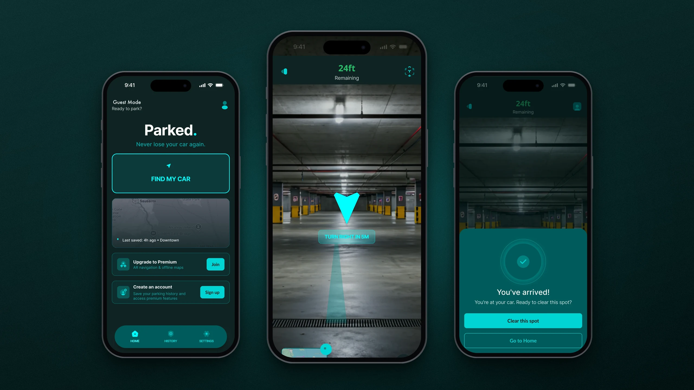
Context
One of three core Chop Dawg projects, alongside Phomo and Pure Savings.
iOS-first, built on ARKit.
Built for drivers who park in big garages, stadium lots and unfamiliar streets, and come back hours later with no idea where the car is.
Freemium: Guest Mode works without an account; Premium adds AR navigation and offline maps.
The challenge
Regulation & platform
Camera and location permissions are App Store–reviewed and the first drop-off point. Denying either breaks the core feature.
Business
The free tier has to solve the problem on day one, or nobody stays long enough to see Premium. Guest Mode lowers the bar to entry; an account and Premium earn their place later.
User experience
Users are rushed, carrying things, often in garages with weak GPS and low light — exactly where AR tracking degrades.
Research
Documentation and product analysis.
Apple’s Human Interface Guidelines for AR: coaching, comfortable viewing, and when to leave the camera view.
ARKit tracking limits in low light and on featureless surfaces, the exact conditions of a parking garage.
How Apple Maps and Google Maps handle parked-car pins: a good start outdoors, but no help on Level 4.
System mapping
The loop, from saving a spot to clearing it.
01Park
The user taps Save Car once.
02Anchor
The app stores the location and an AR anchor.
03Return
The user is guided back toward the area.
04Locate
The hologram appears and changes color as the distance closes.
05Clear
The spot clears once the car is found.
UX strategy
Glance, don’t read.
The hologram carries the answer; text is backup.
Never color alone.
Proximity states pair color with size, motion or labels (WCAG 1.4.1).
Fail soft.
When AR tracking drops, fall back to compass or map instead of an empty camera view.
One tap to save.
Saving a spot must be faster than photographing the pillar number.
Information architecture
Four destinations, with saving and finding a spot one tap from Home.
Home
Save spot
Find my car
Locate
AR view
Saved spots
History
Settings
Permissions
Units
Core flows
Three flows: save the spot, find the car, and recover when AR can’t.
Save parking spot
Open app
Permission check
Tap Save
Confirmation with location preview
Return and locate
Tap Find my car
Directional guidance
AR view
Hologram shifts color as distance closes
Car found
Spot cleared
AR fallback
Low light or lost tracking
Plain-language reason
Compass or map mode
Retry AR
Design system
Token-first, component-first Figma build.
Distance HUD: the remaining distance at display size, with a plain label underneath, readable at arm’s length.
AR direction arrow and instruction chip (“Turn right in 5 m”), anchored to the floor path.
Zone card: level, row and landmark (“Level 4, Row B, near the elevator”), the way people actually remember where they parked.
Permission row: icon, permission name, a one-line reason and a toggle, for location, camera and notifications.
Save Car button: the largest target on its screen, because saving has to beat photographing the pillar.
Upsell card: icon, benefit and a short CTA (Join, Sign up). Present on Home, never in the way of Find My Car.
High-fidelity screens
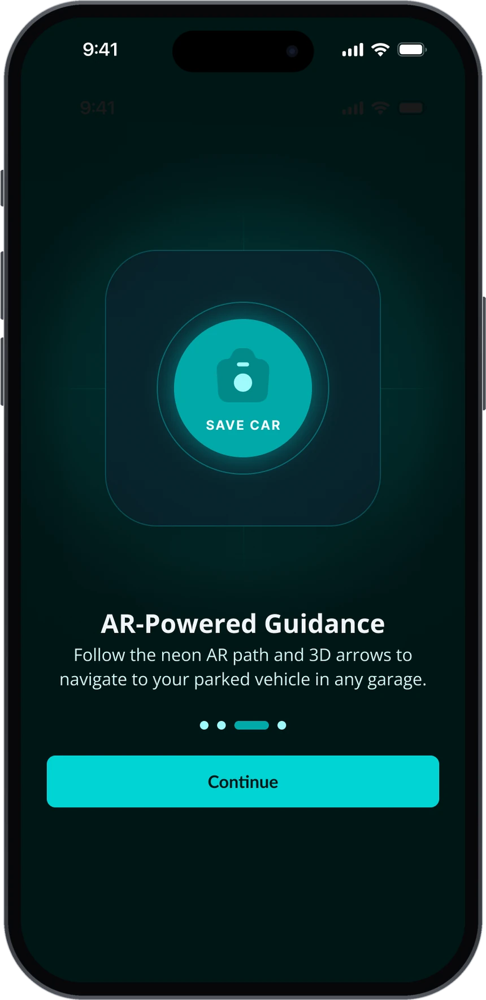
Onboarding: AR guidance
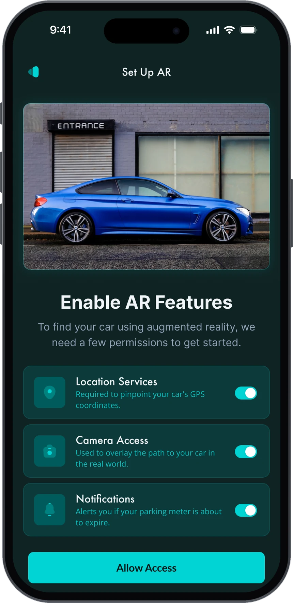
Permission priming
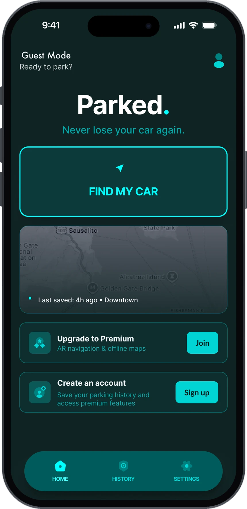
Home: car saved
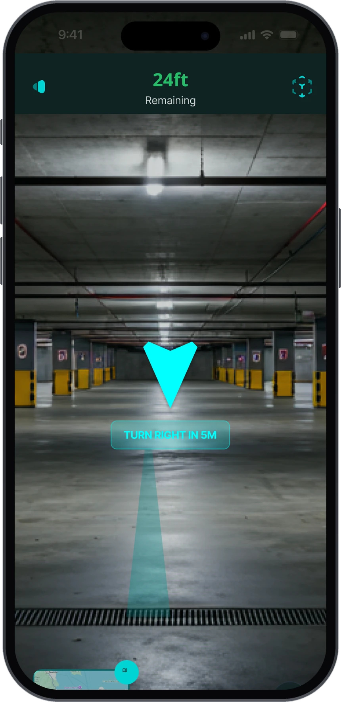
AR navigation
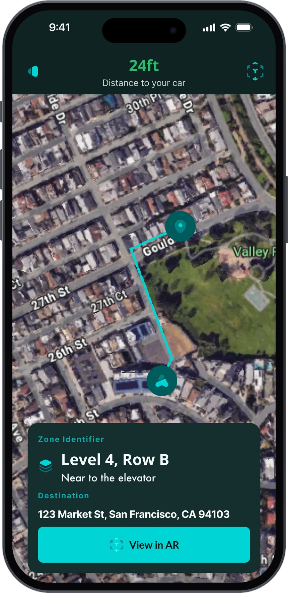
Fallback: map navigation
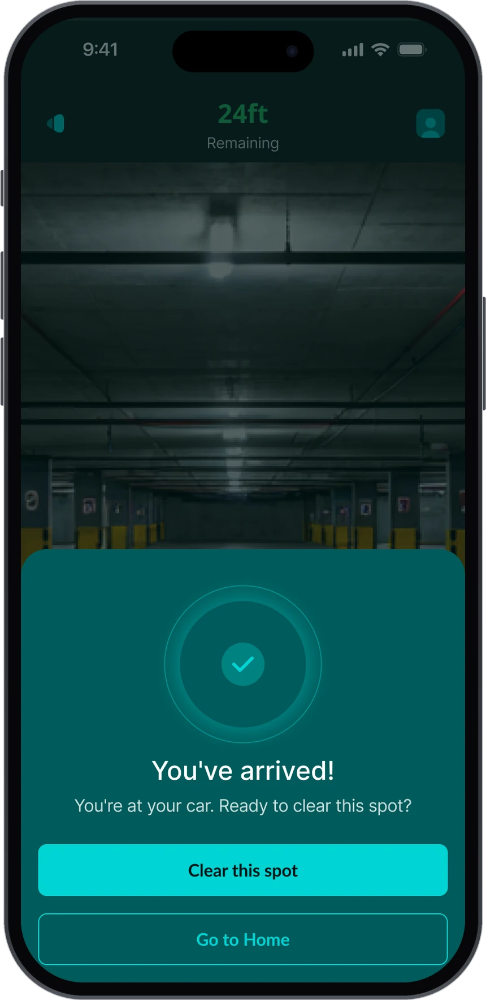
Arrival: clear the spot
Key interactions
One tap to save.
Save Car stores the location and the AR anchor in a single action, with no form to fill.
Distance that counts down.
The HUD updates as you walk and the arrow turns with the path, so you can follow it without reading.
AR and map, both ways.
When tracking drops, the map takes over with the zone and destination, and View in AR brings the hologram back.
A clean ending.
On arrival the app asks one question: Clear this spot, or Go to Home.
Learnings
Design the failure state first. A garage is exactly where AR breaks. The map fallback, with a level, row and landmark, carries the experience whenever the camera can’t.
Explain before you ask. Priming each permission with a one-line reason turns a system prompt into an informed yes, and denied permissions are the first place this product fails.
One unit system per screen. Feet in the HUD and meters in the turn instruction slow down a glance. Units belong in the design system, not in each screen.
What I’d measure
North star
Successful finds: Find sessions that end in “car found”
A social app built around one daily shared prompt: you post your answer to unlock the feed.
Studio
Chop Dawg Studios
Platform
Mobile, iOS-first
Role
Product design: UX flows, UI and UX copy
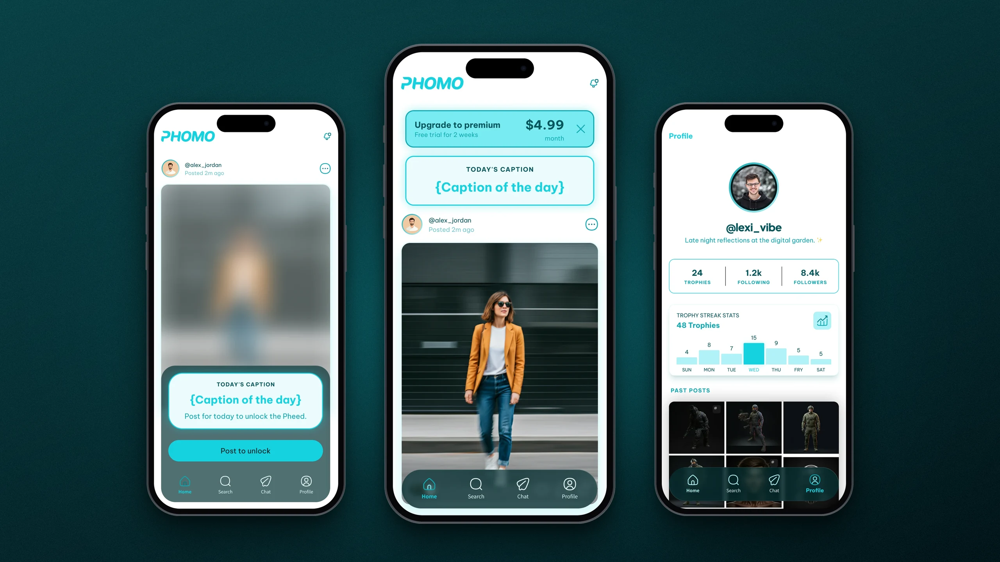
Context
One of three core Chop Dawg projects, alongside CAFHO and Pure Savings.
Core loop: one daily shared prompt, and you post to unlock the feed.
Trophies and streaks drive retention; subscription tiers drive revenue.
Built for a younger audience.
Premium at $4.99 a month, with a two-week free trial.
The feed has its own name, the Pheed, so the brand shows up in the core action: Post to Pheed.
The challenge
Regulation & platform
A younger, user-generated-content audience triggers App Store UGC rules (filter, report, block) and, if any users are under 13, COPPA consent.
Business
Subscription tiers have to add value without paywalling the daily loop that drives retention.
User experience
Post-to-unlock and streaks motivate, but tip into pressure and streak anxiety when punishment outweighs reward.
Research
Documentation and product analysis.
BeReal’s post-to-see mechanic: proof that a locked feed drives daily posting, and a warning about how fast it can feel like a chore.
Duolingo’s streak design: freezes and repairs that keep a missed day from ending the habit.
App Store Guideline 1.2 on user-generated content: filtering, reporting and blocking as launch requirements.
System mapping
One daily loop, built around a shared prompt.
01Prompt drop
Everyone gets the same daily prompt.
02Post
The user answers it.
03Unlock
Posting opens the feed.
04Engage
The user browses, gives trophies and comments on others’ posts.
05Reward
Streaks and trophies update, with a tier upsell where relevant.
UX strategy
Give before you get.
Reciprocity is the product. The locked feed is the hook, not a punishment.
Streaks reward, never shame.
Missed days get recovery paths, not guilt copy.
Safe by default.
Report, block and privacy controls are one tap away for a young audience.
Premium extends the loop, never gates it.
Free users always get the full daily ritual.
Information architecture
Four areas, with Today as the front door.
Today
Prompt
Compose
Feed
Locked state
Unlocked state
Profile
Trophies
Streaks
Past posts
Settings
Subscription
Privacy
Safety
Core flows
Four flows: the daily unlock, streaks, upgrading, and staying safe.
Daily prompt to unlocked feed
Prompt notification
Today screen
Compose and post
Feed unlock moment
Browse
Streaks and trophies
Post
Streak increments
Trophy at milestones
Missed day
Recovery option
Subscription upgrade
Tier entry point
Tier comparison
Purchase
Perk confirmation
Report and block
Post overflow menu
Report reason or block user
Confirmation
Content hidden
Design system
Token-first, component-first Figma build.
Today’s caption card in two states: locked over a blurred post with Post to unlock, and unlocked at the top of the Pheed.
Post header: avatar, handle, posted time, and an overflow menu that holds report and block.
Profile stat trio: trophies, following and followers at equal weight.
Trophy streak chart: seven days, with today highlighted.
Upgrade banner: price, trial length and a dismiss control. It can always be closed.
Settings list grouped by Account, Subscription, Preferences, and Support and legal.
High-fidelity screens
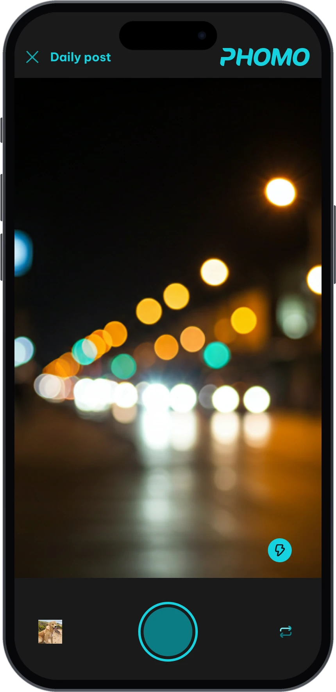
Daily post: camera
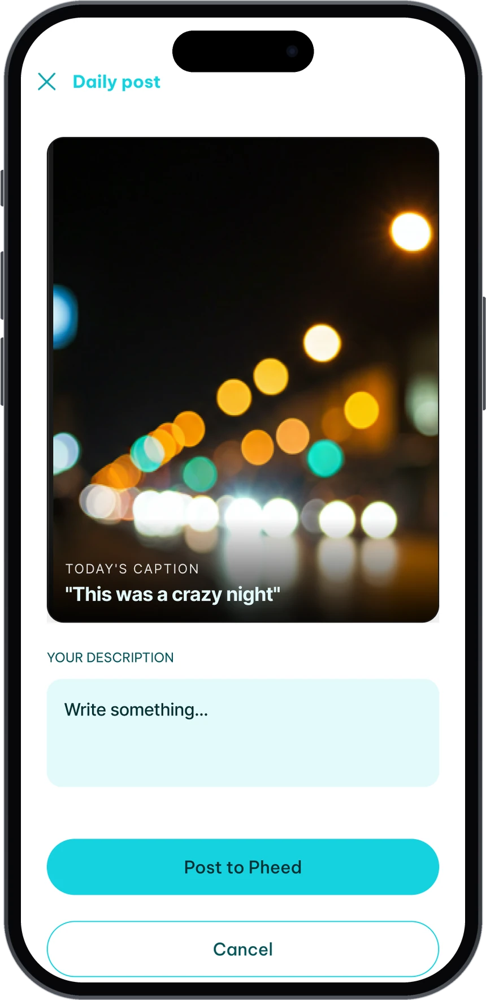
Compose
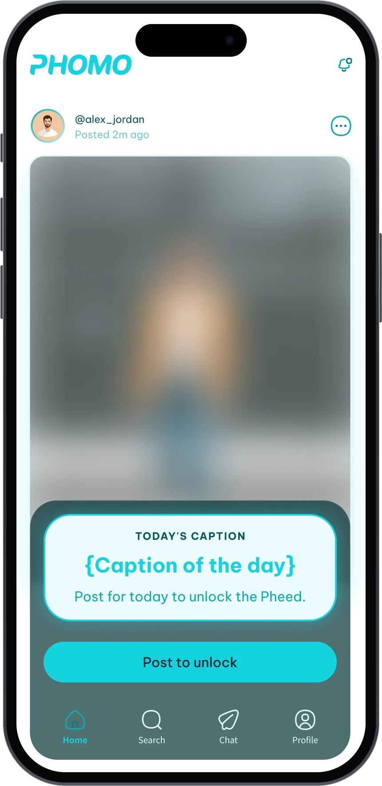
Feed: locked
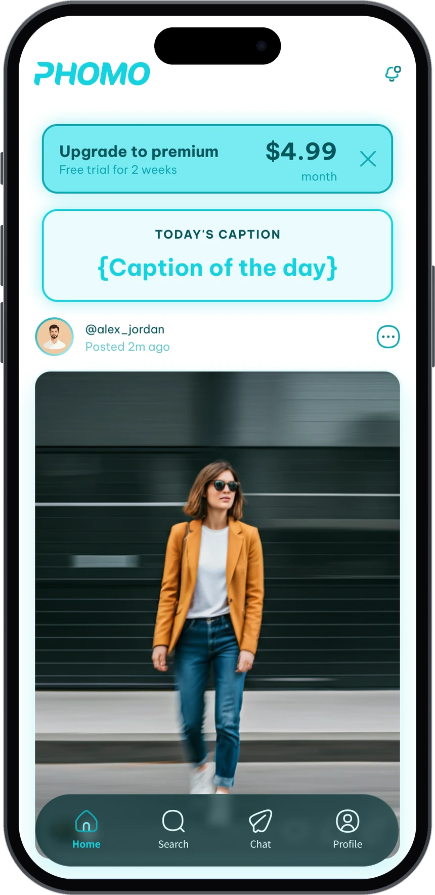
Feed: unlocked
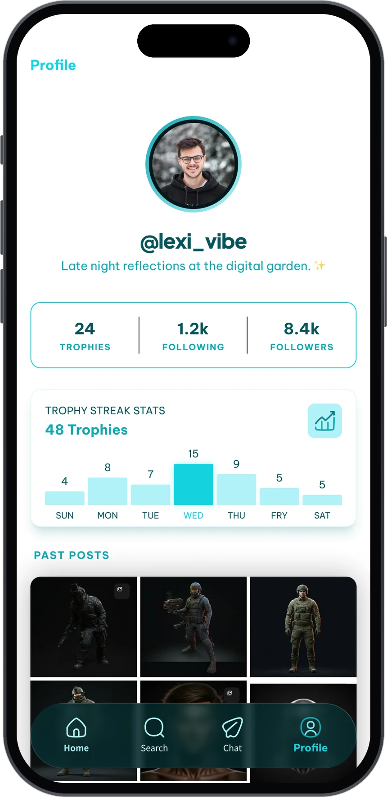
Profile with streak stats
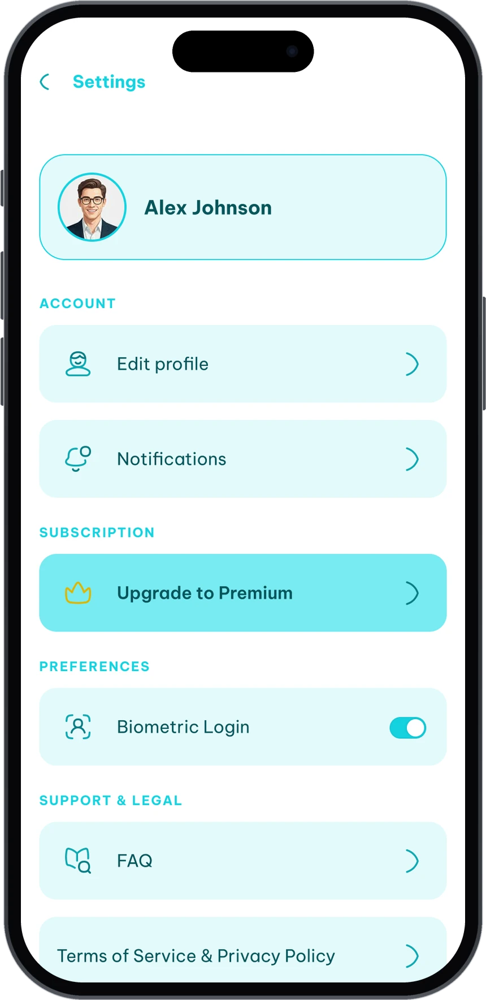
Settings: upgrade to Premium
Key interactions
The unlock moment.
Posting today’s answer lifts the blur, and the feed opens on everyone else’s take on the same caption.
Camera to Pheed.
Shoot, add a description, Post to Pheed. Cancel is always one tap away.
A tease, not a wall.
The locked state shows a blurred post, so you can see what you’re missing before you commit.
Premium you can close.
The upgrade banner sits above the caption with its price and trial up front, and a close button.
Learnings
A lock only works if you can see the reward. The blurred preview does more for posting than any copy could. It turns “you can’t” into “you’re one post away.”
Brand words need a plain-language partner. “Pheed” is memorable, but the button next to it still says Post to unlock. Personality goes in the name; clarity goes in the action.
Monetize around the ritual, not inside it. Premium lives in a closable banner and in Settings, never inside the post flow, so the daily loop stays free and fast.
What I’d measure
North star
Daily post rate: share of daily actives who answer the prompt
A subscription app that unlocks exclusive deals at local businesses, and shows subscribers exactly how much they’ve saved.
Studio
Chop Dawg Studios
Platform
Mobile, iOS-first
Role
Product design: UX flows, UI and UX copy
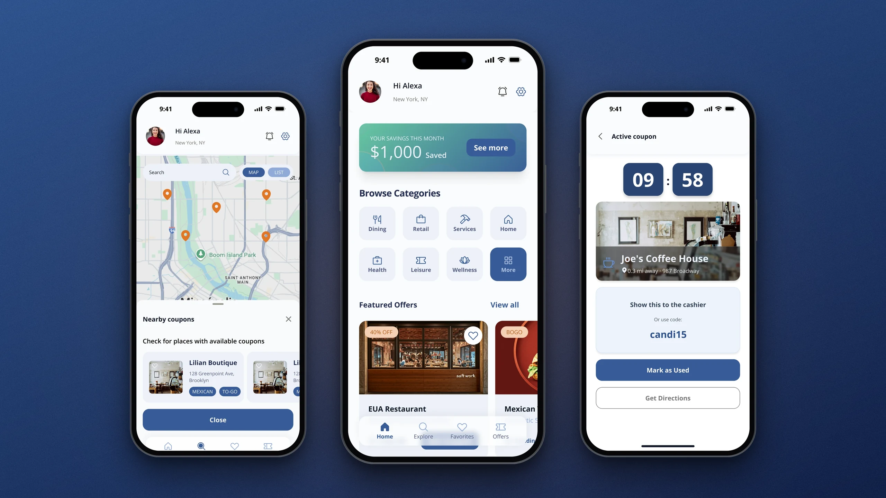
Context
One of three core Chop Dawg projects, alongside CAFHO and Phomo.
Model: local coupons behind a subscription.
Premium at $6.99 a month, designed around a local market (New York in the screens).
Deals span dining, retail, services, home, health, leisure and wellness.
One coupon is active at a time: what you need, when you need it.
The challenge
Regulation & platform
Auto-renewing subscriptions carry App Store disclosure rules and state auto-renewal laws, and coupon terms need clear fine print.
Business
Two-sided value: merchants need foot traffic, and subscribers need savings that visibly exceed the fee.
User experience
Redemption happens at a counter, under time pressure, sometimes on poor signal.
Research
Documentation and product analysis.
Groupon and local coupon-book apps: strong at discovery, weak at showing whether the membership pays for itself.
App Store Guideline 3.1.2 on auto-renewing subscriptions: price, period and terms shown before purchase.
State auto-renewal disclosure rules, which shaped the renewal reminder and the cancel path.
System mapping
The subscriber loop, from sign-up to renewal.
01Subscribe
The user starts a plan.
02Discover
The user browses local deals.
03Redeem
The user shows the coupon at the merchant.
04Verify
The cashier sees the live coupon or enters its code, and it’s marked as used.
05Renew
The subscription renews, or the user cancels.
UX strategy
Make the savings visible.
Show cumulative savings against the subscription cost.
Redeem in seconds.
The counter moment works one-handed and offline.
Local first.
Proximity and category beat global search.
Honest renewal.
Renewal dates and cancellation are as easy to find as the deals.
Information architecture
Four areas, organized around finding and redeeming deals.
Discover
Map
List by category and distance
Saved deals
Redeem
Wallet
Account
Subscription
Savings tracker
Core flows
Four flows, from subscribing to renewing or canceling.
Onboard and subscribe
Value preview
Location permission
Plan selection
Purchase
First deals nearby
Discover a deal
Browse by category or map
Deal detail with terms
Save or redeem
Redeem at the counter
Open deal
Redeem promotion
Active coupon with a 10-minute countdown
Show to the cashier or use the code
Mark as Used
Savings logged
Renew or cancel
Renewal reminder
Savings recap
Renew, or cancel without friction
Design system
Token-first, component-first Figma build.
Savings hero card: this month’s total at display size, with a path to the full tracker.
Category tile grid: eight icon tiles, one tap from Home.
Deal card: photo, offer badge (40% OFF, BOGO), merchant name and a favorite toggle.
Coupon countdown: minutes and seconds in large type, so the cashier can read it across the counter.
Redemption code block: “Show this to the cashier,” with a code as the fallback.
Terms block: conditions in plain language, directly under the offer instead of behind a link.
High-fidelity screens
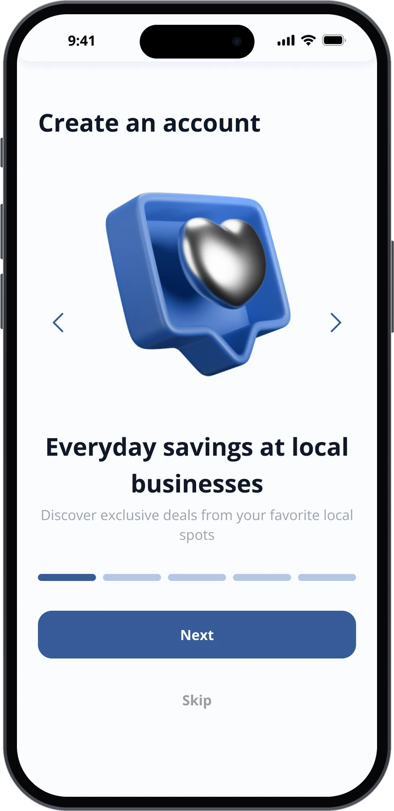
Onboarding: everyday savings
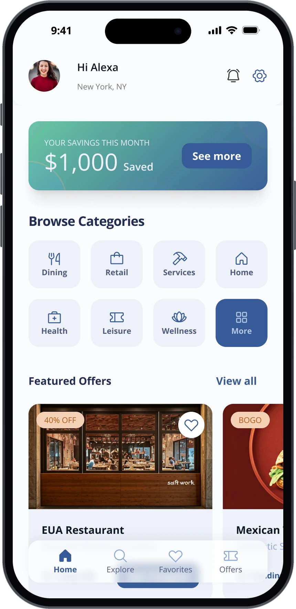
Home: savings and categories
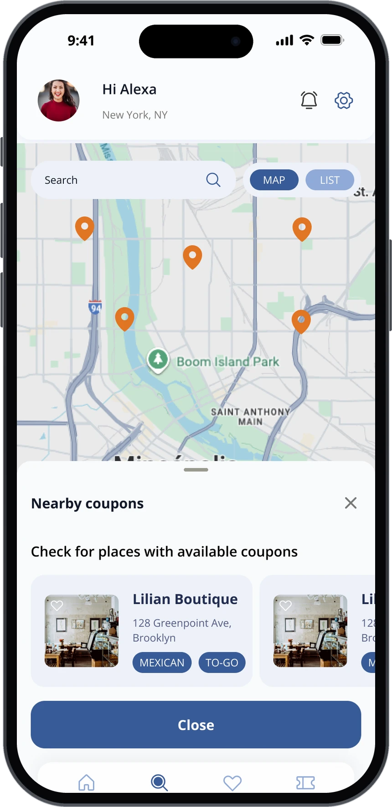
Discover: nearby deals map
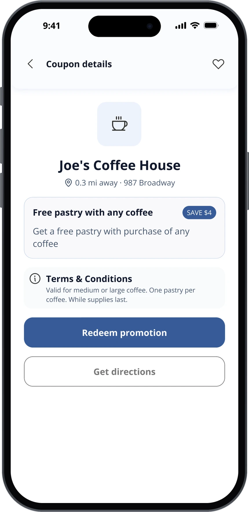
Deal detail
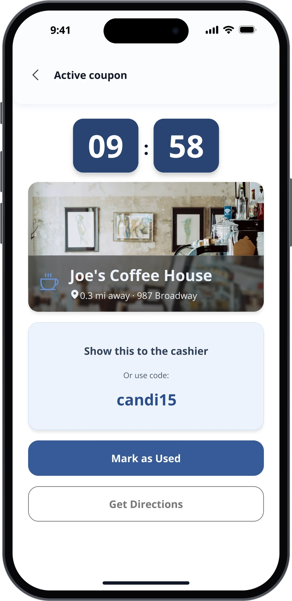
Redeem screen
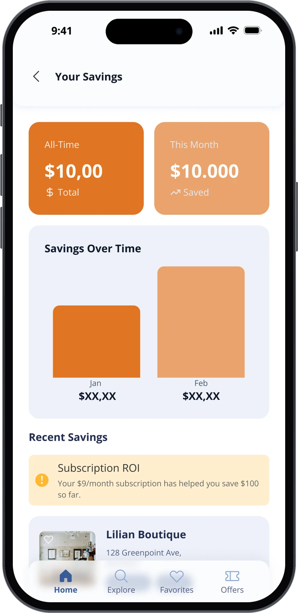
Savings tracker
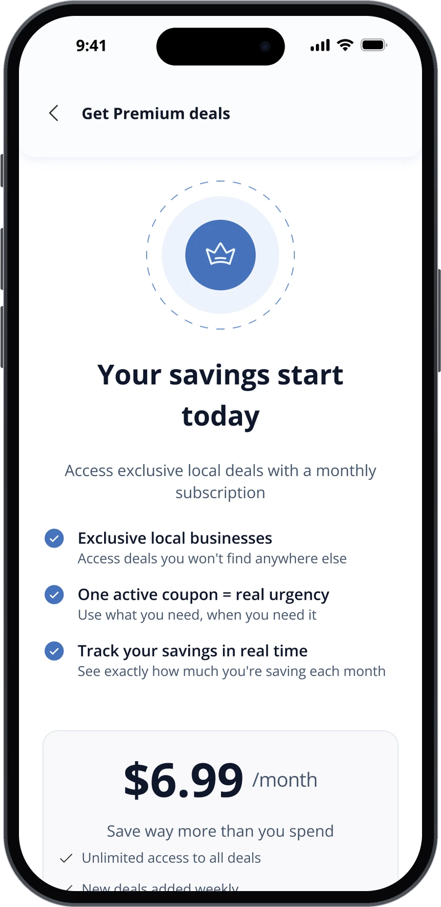
Subscription
Key interactions
The counter moment.
Redeem promotion starts a 10-minute countdown with the merchant, the offer and a code on one screen, ending in Mark as Used.
Map or list.
Discover toggles between a map of nearby deals and a list, with a sheet of nearby coupons over the map.
Savings against the fee.
The tracker compares what you saved with what you paid, so the subscription keeps proving its value.
A paywall that sells savings.
“Your savings start today,” three benefits and one price. No dark patterns on the way in or out.
Learnings
The value proposition is a number. Savings against the fee is the whole pitch, so every figure has to agree everywhere: same price, same currency format, same totals. One wrong number breaks trust faster than any bug.
Urgency needs an exit. A countdown makes the coupon feel alive at the counter, but it also needs a clear answer for when time runs out mid-line.
Some screens have two readers. The redeem screen is read by the cashier as much as by the subscriber, so it gets large type, high contrast and one clear status.
A React Native app that lets farmers find any photo by the text inside it, using OCR.
Client
Nick Rimpley / RimpTech LLC
Platform
React Native
Role
Taglines, project briefs, project descriptions
Timeline
August 2026 launch target
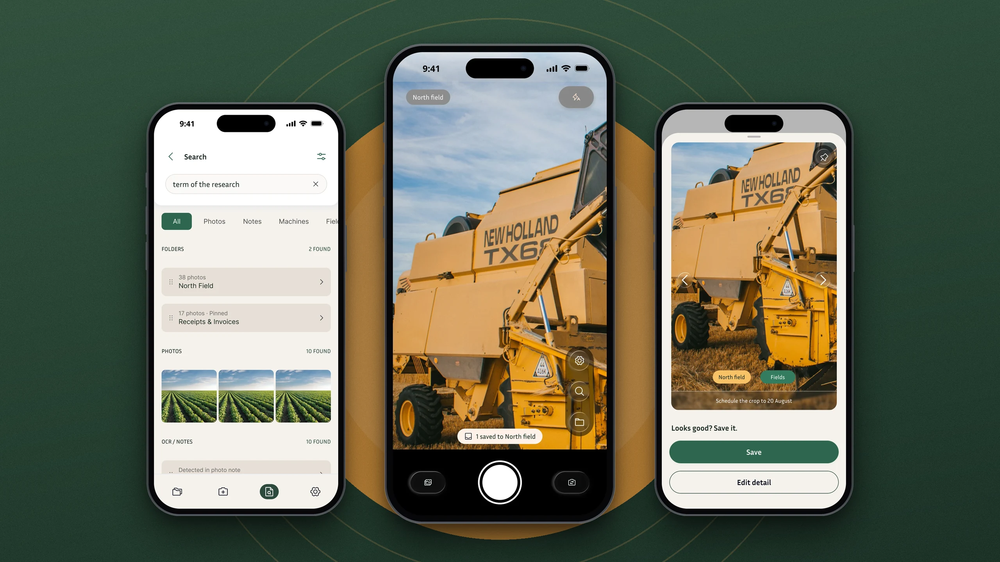
Context
A camera-first app for farmers, with OCR-based photo search.
Launch targeted for August 2026.
A brand rooted in Midwest agricultural imagery, like center-pivot irrigation, with a quiet, utilitarian tone.
Farmers photograph everything: equipment plates, receipts and invoices, labels, field notes. Finding one again later is the hard part.
Photos are organized by folder and field (North Field, Receipts & Invoices) and searchable by the text inside them.
The challenge
Regulation & platform
Camera and photo-library permissions are the entry gate, and farm photos can hold sensitive operational data, so ownership and privacy need plain answers.
Business
A fixed August 2026 launch target.
The brand had to earn trust from people who distrust tech hype: plain, useful and built for work.
User experience
Field use means glare, gloves, dust and spotty signal, and OCR reading weathered, real-world text.
Research
Documentation and product analysis.
Farm record-keeping apps: powerful, but built around forms rather than the camera.
Text search in Google Photos and Apple Photos: proof that people will search by what’s written in a photo.
Midwest agricultural brand references, from center-pivot irrigation to equipment livery, for the visual direction.
System mapping
The loop, from capture to retrieval.
01Capture
The camera opens first.
02Extract
OCR reads the text in the photo.
03Index
Extracted text becomes searchable.
04Search
The farmer types or speaks what they remember.
05Retrieve
Matching photos return with the hit highlighted.
UX strategy
Camera first, typing last.
The fastest action is the default screen.
Built for the field.
Large targets, high contrast, offline capture.
Quiet and utilitarian.
No hype, no clutter. The brand tone, applied to UI and copy.
Find by what’s in it.
Search by remembered text, not by date or folder.
Information architecture
The camera is the home screen. Everything else sits one tap away in the bottom bar.
Capture
Camera home
Current folder chip
Photo preview: save or edit detail
Folders
Folders by field and topic
Pinned folders
New folder
Search
All, Photos, Notes, Machines, Fields
Results by folder, photo and OCR note
Settings
Account
Sync and storage
Core flows
Three flows: capture, search by the text inside a photo, and retrieve.
Capture
App opens to camera
Shoot
Auto-save, with OCR running in the background
Search by text in photos
Search field
Type a remembered word or number
Results with matched text highlighted
Retrieve and share
Open result
View full photo and extracted text
Share or export
Design system
Brand direction: Midwest agricultural imagery, center-pivot irrigation, a quiet and utilitarian tone.
Voice: short, plain and concrete. “Looks good? Save it.” over “Your photo is ready to be saved.”
Palette: field green on warm paper, with harvest yellow reserved for folder tags.
Folder chip and save toast (“1 saved to North field”), so every capture confirms where it went.
Search filter tabs and result groups with counts (2 found, 10 found).
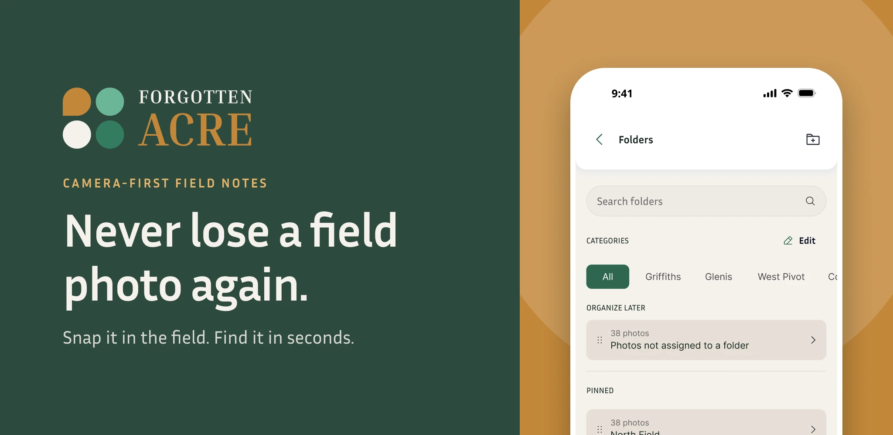
High-fidelity screens
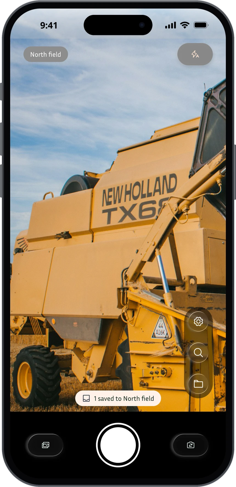
Camera home
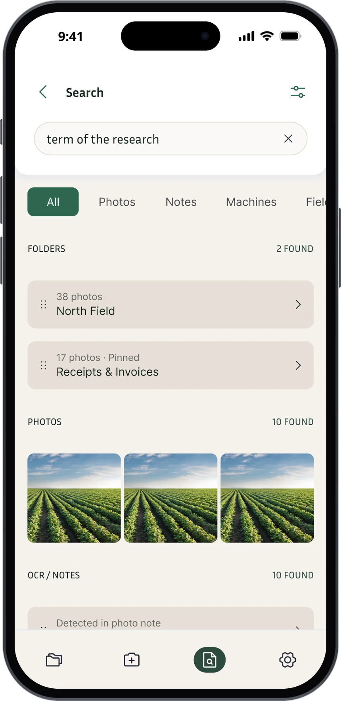
Search results
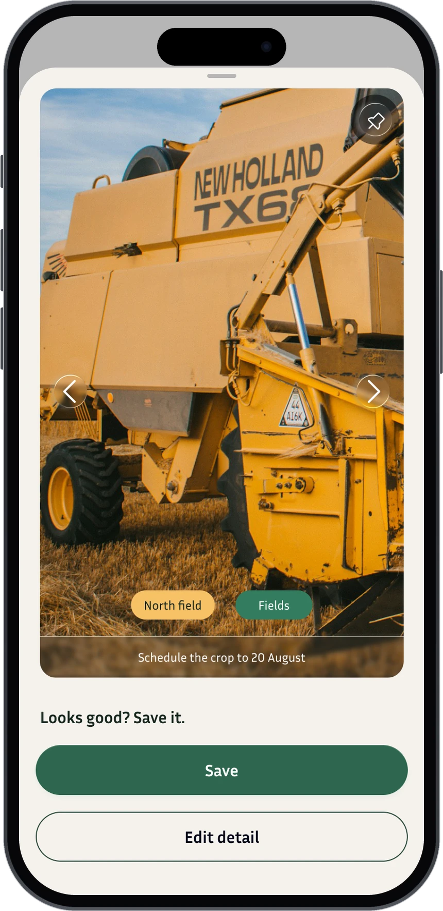
Photo preview: save with a note
Key interactions
Shoot and it’s filed.
The camera already knows the folder. Each shot confirms with a toast: “1 saved to North field.”
Save or add detail.
The preview offers two choices: Save, or Edit detail to add a note and tags.
Search by what’s in it.
One query returns matching folders, photos and OCR notes, each group with its count.
Learnings
Say the outcome, not the feature. “Never lose a field photo again” lands harder than any line about OCR. Farmers buy the result, not the technology.
Organize at capture, not later. Nobody files photos at the end of a 14-hour day. The folder chip on the camera makes organizing free.
A quiet tone sharpens copy. Keeping it utilitarian forced fewer words and concrete nouns, like North field and Receipts & Invoices, and that made the UI easier to scan.
What I’d measure
North star
Successful searches: search sessions that end in an opened result
What's up
on socials